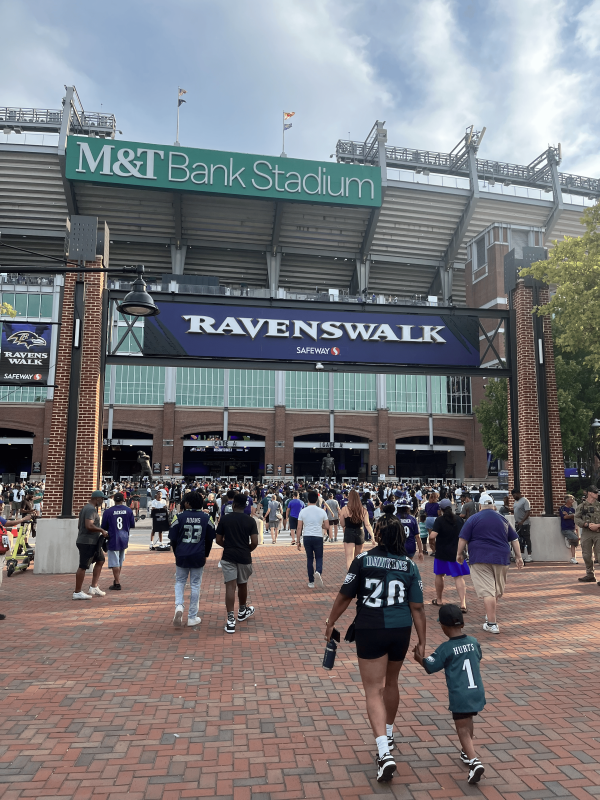

Lab 04 Multi Web Page
3rd Image
This image will be the final one and is formatted as a png.

About
So, this image was of course taken by me and I formatted it as a png because in the photo there is multiple structure with sharp edges. I took this picture on August 12, 2023. That was a good while ago and this game was a pre season game but it was still a lot of fun.
Source
- Original Photo by Eduardo Cardenas